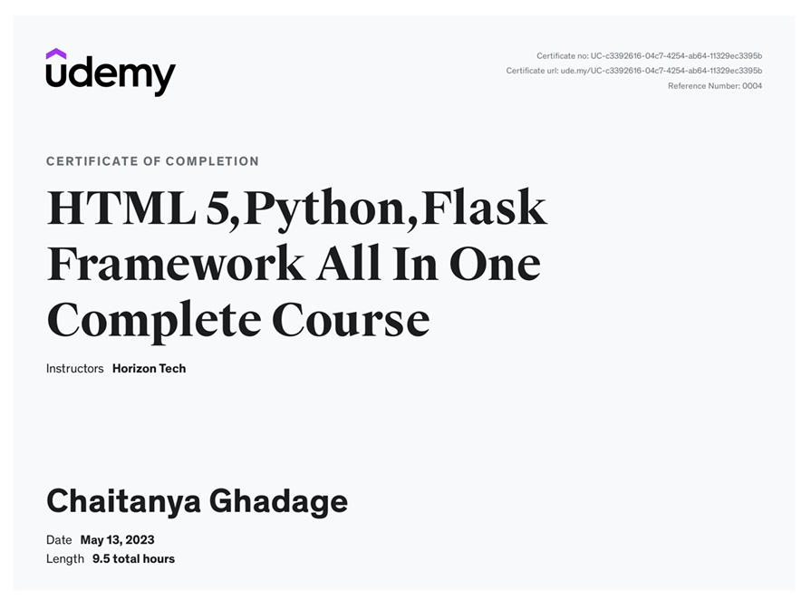
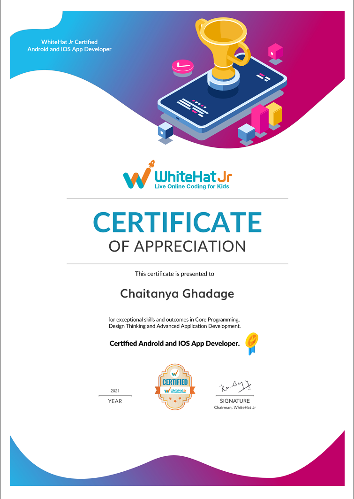
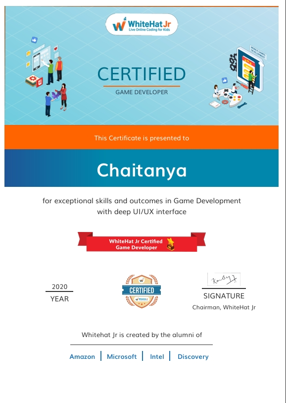

Digital Creator • Frontend Developer (Backend Not Available Because Still Learning) • Problem Solver • Basic Video & Photo Editing • Basic Github Developer • Full Html & React Native Website Ui Designer • Certified Developer By Whitehat JR
Hi, I'm Chaitanya Ghadage, A creative developer passionate about building elegant, performant websites. I focus on clean code, thoughtful design, and user-first experiences.
A web scraper built using Python and Flask to extract product data from Amazon, process it, and display the results via a clean web interface.
View on GitHubA Python-based automation bot using pywhatkit to send scheduled WhatsApp messages via the web.
Note: This project hasn't been updated in a while and may not work as expected. Updates will be made soon. For reference only.
A proof-of-concept chatbot that integrates OpenAI's GPT API with WhatsApp using Twilio and Flask for smart AI responses via WhatsApp.
Note: This project is not actively maintained and may not work currently. Updates will be made soon. Shared for reference purposes only.
A sentiment analysis project using Python and Natural Language Processing (NLP) to analyze Amazon product reviews and classify them as positive or negative.
View on GitHubA computer vision project using Python and OpenCV to detect hand gestures for "like" and "dislike" using a webcam feed. It processes frames in real-time to identify thumb positions and gestures.
View on GitHubA simple Python desktop tool using Tkinter and PIL that allows users to capture and save screenshots with a custom GUI interface. Ideal for quick screen captures.
View on GitHubA real-time computer vision project using Python and OpenCV to detect pedestrians in video streams with Haar Cascade classifiers. Designed to enhance safety and surveillance systems.
View on GitHubA Python script that organizes files in a directory by automatically sorting them into folders based on file type (e.g., images, documents, videos). Useful for cleaning up messy downloads.
View on GitHubA Python automation tool that scans a directory and neatly organizes files into categorized folders based on their extensions (e.g., .jpg, .pdf, .mp4). Saves time and keeps folders clean.
View on GitHubA Python-based interactive dashboard using Plotly and Dash to visualize real-time COVID-19 data, including cases, recoveries, and deaths by country and date range.
View on GitHubA React Native mobile app that lets users view and interact with a feed of stories. Features include navigation, user authentication, and styled UI components — part of a multi-stage Instagram-like app development series.
View on GitHubA React Native app that allows users to write, view, and share creative stories. Features include a beautiful UI, navigation between screens, and basic user interaction. Great for practicing mobile app development fundamentals.
View on GitHubA React Native app that tracks the real-time location of the International Space Station (ISS) using live data from a public API. Includes map integration and updates ISS coordinates dynamically for space enthusiasts.
View on GitHubA React Native app that helps users explore planets and stars. It features interactive navigation, fun facts about celestial bodies, and basic UI/UX design as part of a beginner-friendly mobile development series.
View on GitHubAn augmented reality prototype that captures objects from the real world using a mobile camera and pastes them directly into desktop applications. Inspired by experimental computer vision + AR workflows.
View on GitHubA web platform for CBSE students offering structured learning materials, subject-wise notes, and a clean responsive design. Built with HTML, CSS, and JavaScript to support self-paced study.
View on GitHubA physics simulation built with JavaScript and Matter.js that demonstrates the conservation of momentum and energy using a virtual Newton’s Cradle. Great for visualizing physics concepts interactively.
View on GitHubA simple and beautifully designed HTML & CSS website that showcases a step-by-step chocolate cake recipe. Perfect for beginners learning web development and layout styling.
View on GitHubA basic JavaScript project that detects collision between two objects using the "isTouching" function. Built with p5.js to help beginners understand object interaction and 2D collision logic.
View on GitHubA fun JavaScript-based clone of the classic offline Chrome T-Rex runner game. Built using p5.js, featuring jumping obstacles, score tracking, and basic collision detection for endless gameplay.
View on GitHubAn endless runner game built with p5.js, where a monkey jumps over obstacles and collects bananas. Features include increasing speed, score tracking, and simple collision logic for game over.
View on GitHubAll these projects were created by me during the course of WhiteHat Jr.
Issued by Udemy •
Issued by Udemy •
Issued by Udemy •
Issued by WhitehatJr •
Issued by WhitehatJr •
Email me at: ghadage.chaitanya7526@gmail.com